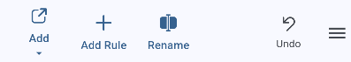
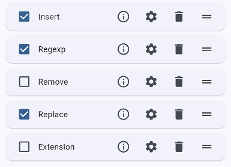
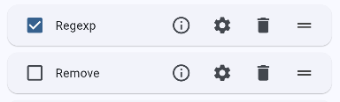
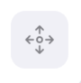
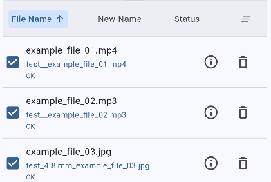
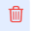
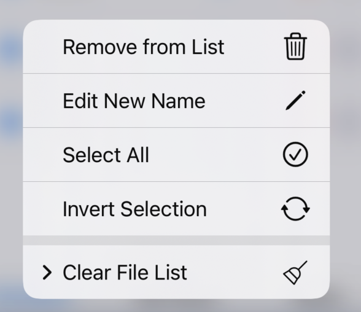
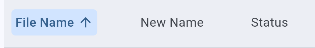
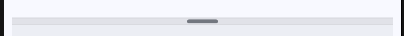
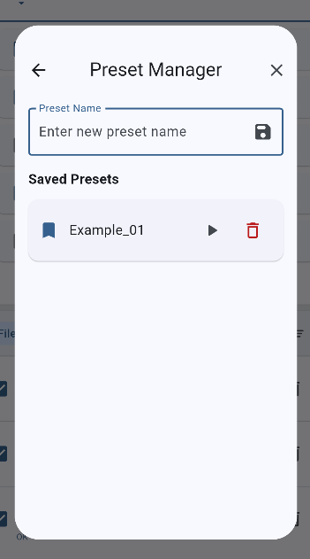

Interface Guide
This page provides a detailed overview of Power Renamer's interface layout and functional areas.
Main Interface Layout
Toolbar
Located at the top of the interface, includes the following function buttons:

Toolbar with Main Function Buttons
- Add Files: Select files or folders to rename
- Add Rules: redirect to rules pages
- Rename: Execute the renaming operation
- Undo: Revert the last renaming operation (⚠️ only supports undoing the most recent rename operation)
- Right Menu Button: Opens the side menu
Rules Area
Located in the upper half of the interface, used for managing renaming rules:

Rules Area with Multiple Rules Applied
- Rules List: Displays all currently applied rules
-
Rule Items:

Rule Item with Controls
- Toggle Checkbox: disable/enable rules
- Info Button : Display rule settings information
- Settings Button : Navigate to rule configuration page
- Delete Button : Remove rule
- Drag Handle : Adjust rule order
File List
Located in the lower half of the interface, displays files to be renamed:

File List Overview
- Display Modes: The file list adapts to your screen size with a responsive layout:
- Table View (large screens): Displays files in a structured table format
- Card View (small screens): Files appear as compact cards for mobile and narrow windows
- File Information:
- Original Filename: Shows the current filename
- New Filename: Shows preview after applying rules
- Status: Displays validation or processing status information
- File Actions:
- Info Button : Displays detailed file information including original path and status
- Edit Button : Opens a dialog to directly edit the new filename
- Delete Button : Remove file from the list
- Checkbox: Select files for batch operations
-
Context Menu (Long Press):

Context Menu on Long Press
- Long-press on any list item to open a context menu with multiple operations:
- Selection Operations:
- Select All: Select all files in the list
- Invert Selection: Select unselected files and deselect selected files
- Clearing Operations:
- Clear All: Remove all files from the list
- Clear Invalid Items: Remove files with validation errors
- Clear Rename Failed: Remove files that failed during rename
- Clear Restore Failed: Remove files that failed during undo
- Clear Renamed: Remove successfully renamed files
- Clear Restored: Remove successfully restored files
-
Sorting Functionality:

File Sorting Options
- Filename: Sort by original filename (click to toggle ascending/descending)
- New Filename: Sort by renamed filename (click to toggle ascending/descending)
- Status: Sort by file status (click to toggle ascending/descending)
Divider Bar
Located between the rules area and file list:

Divider Bar for Resizing Sections
- Long press and drag to adjust the size of both areas
Feature Areas Guide
Side Menu
Contains the following function options:

Side Menu with Options
- Preset Management: Save and load rule combinations
- File Selection Settings: Configure file selection options
- Language Settings: Switch interface language
- Help Documentation: Open this help system
- About: Display application information
Preset Management
Used for managing renaming rule combinations:

Preset Management Interface
- Save Preset: Save current rules as a preset
- Load Preset: Apply a saved preset
- Delete Preset: Remove unwanted presets
Interface Usage Tips
Rule Management
- Use drag and drop to adjust rule order
- Temporarily disable rules to test effects
- Use presets to save frequently used combinations